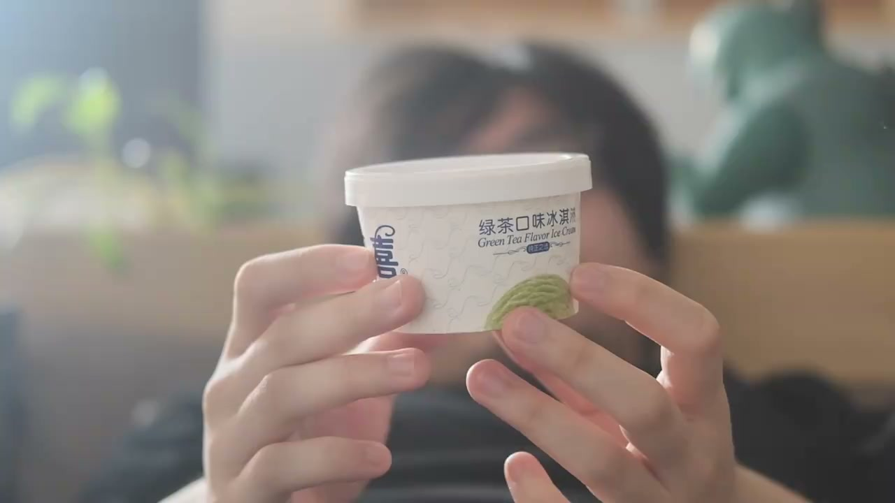
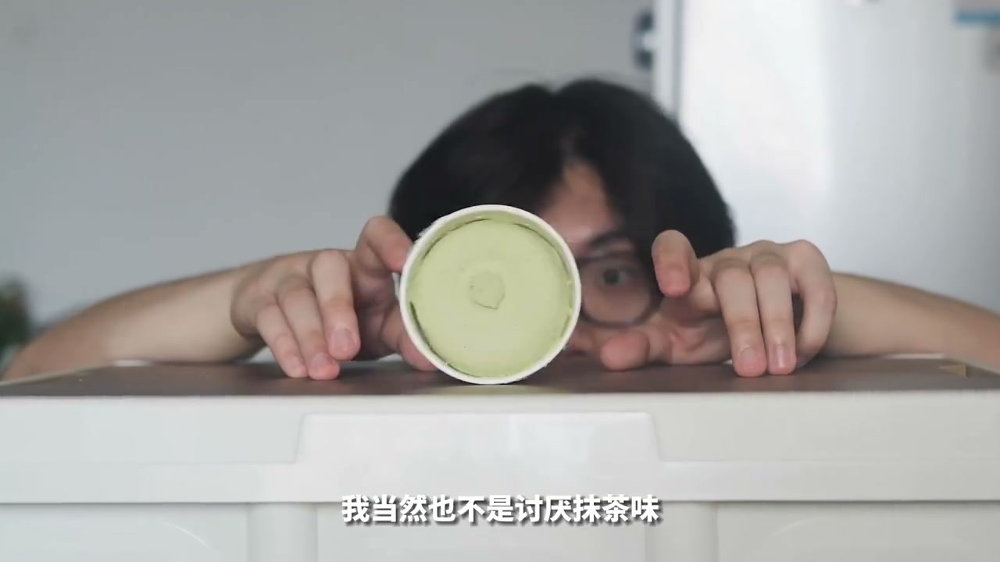
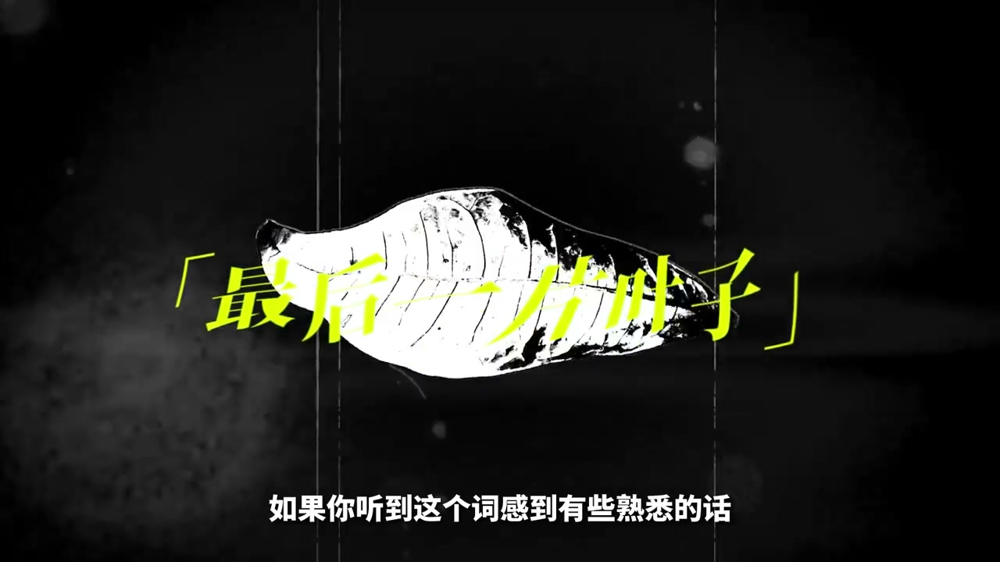
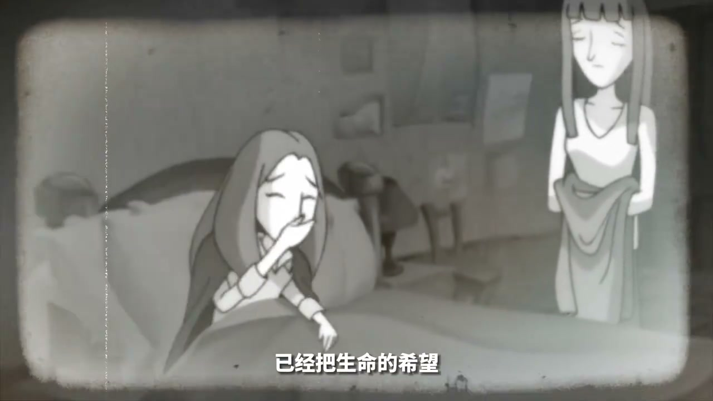

01
中文
这罐冰淇淋在没有开封的状态下，陪伴了我整整45天。
EN
This tub of ice cream kept me company unopened for 45 full days.
表达提示unopened company（未开封陪伴）

Scene English · 随笔 · 生活感悟
Before the Lockdown Lifted, I Waited 45 Days to Do This…
🎧 语音讲解
The matcha ice cream: this tub accompanied…
情境一罐舍不得吃的抹茶冰淇淋。
这罐冰淇淋在没有开封的状态下，陪伴了我整整45天。
This tub of ice cream kept me company unopened for 45 full days.
表达提示unopened company（未开封陪伴）
在它之前，没有任何一罐在到达我的位置前能够坚持超过五分钟。
Before it, no tub ever lasted more than five minutes in my hands.
表达提示only five minutes（超不过五分钟）
我在一周内吃光了三桶家庭装，也就是最大桶的那一种。
In one week I finished three family-size tubs—the biggest ones.
表达提示family-size tubs（家庭装）
unopened company（未开封陪伴
only five minutes（超不过五分钟

The story of The Last Leaf: I kept not eat…
情境抹茶冰淇淋成了我的最后一片叶子。
不知道从什么时候开始，它已经成为了我的最后一片叶子。
Sometime along the way, it became my last leaf.
表达提示the last leaf（最后一片叶子）
此时的琼西已经把生命的希望寄托在了窗外的藤叶上。
Johnsy places all her hope on the vine outside the window.
表达提示hope on the vine（寄托希望）
那片没有落下的叶子，其实是老贝尔曼在一个冷雨夜连夜画在墙上的。
That undropped leaf was painted on the wall by Behrman in a cold rainy night.
表达提示painted leaf（画上的叶子）
他仍然认为，最后一片叶子是他生命中最伟大的画作。
He still believed that leaf was his greatest work.
表达提示greatest work（最伟大的画作）
the last leaf（最后一片叶子
hope on the vine（寄托希望

My comfort: the second half of the story h…
情境像琼西一样把希望寄托在最后的念想上。
这款冰淇淋对我来说，确实就像树叶对琼西那样，是一种希望的寄托。
For me this ice cream is like the leaf to Johnsy—a vessel of hope.
表达提示vessel of hope（希望的寄托）
不要嘲笑，你们一定也曾经留下的最后一片叶子。
Don't laugh—you've all saved a last leaf too.
表达提示we all do（人人都有）
至少我还有一罐抹茶冰淇淋，这是我这几十天来经常冒出来的自我安慰。
At least I have a matcha tub—my recurring self-comfort these days.
表达提示self-comfort（自我安慰）
vessel of hope（希望的寄托
we all do（人人都有

Deciding to eat it: I almost ate it many t…
情境与其守着最后的念想，不如让生活恢复常态。
我怕下一次当我情绪低落的时候，连'至少你还有一罐抹茶冰淇淋'都不能对自己说。
I feared that at my next low, I couldn't even tell myself, 'At least you have a matcha tub.'
表达提示afraid to lose hope（怕失去寄托）
生活仍然没有恢复正常，但我该让它恢复正常。
Life still isn't normal, but I should make it so.
表达提示make it normal（让它正常）
我正在种植一棵新的树，并努力让树上多长一些叶子。
I'm planting a new tree, trying to grow more leaves on it.
表达提示grow new leaves（长新叶子）
所以我吃掉了这罐冰淇淋，因为正常的情况下，我早该吃掉它。
So I ate the ice cream—under normal circumstances, I'd have eaten it long ago.
表达提示eat it now（吃掉它）
make it normal（让它正常
grow new leaves（长新叶子
说冰淇淋象征
说课文共鸣
说自我安慰
说守护希望
说恢复正常
寄托不是永远保留。
正常情况早该去做。
与其守着过去不如种新树。
自我安慰不能变成逃避。
完美的标准一直在变。